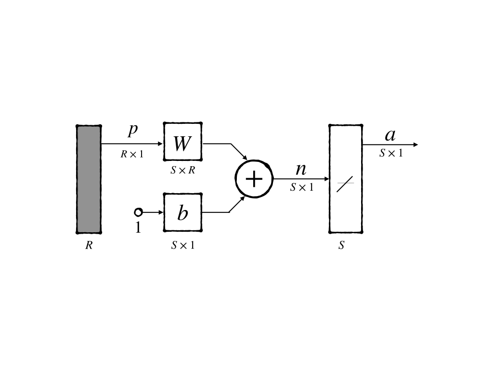
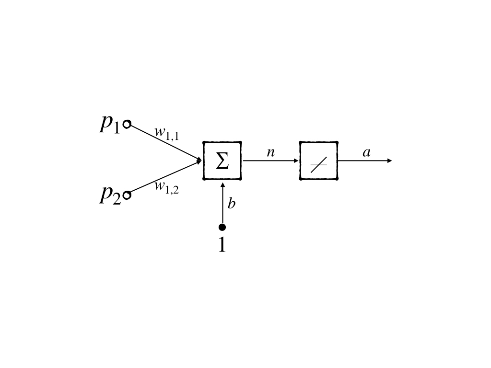
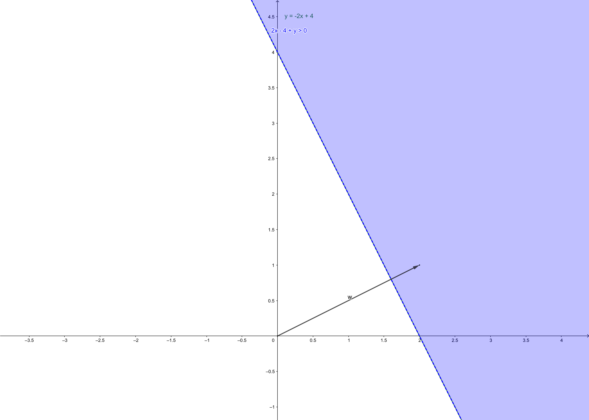

Widrow-Hoff Learning(Part I)
Keywords: Widrow-Hoff learning, ADALINE, Adaptive LInear NEuron, LMS, performance learning
ADALINE, LMS, and Widrow-Hoff learning[1]
Performance learning had been discussed in ‘Performance Surfaces and Optimum Points’. But we have not used it in any neural network. In this post, we talk about an important application of performance learning. And this new neural network was invented by Frank Widrow and his gradate student Marcian Hoff in 1960 when it was almost at the same time as Perceptron which had been discussed in ‘Perceptron Learning Rule’. It is called Widrow-Hoff Learning. This is an approximate steepest descent algorithm. And the performance index used in the learning rule is mean square error.
Perceptron was discussed because it is still used in the current task. It’s a kind of basic block of a current neural network as well. However, Widrow-Hoff learning is supposed to be discussed because it is:
- widely used in many signal processing
- and precursor to the backpropagation algorithm which is a very important aspect of current deep learning research.
ADALINE (Adaptive LInear NEuron) and a learning rule called LMS(Least Mean Square) algorithm were introduced in the paper ‘Adaptive switching circuits’. The only distinction between perceptron and ADALINE is only the transfer function which in perceptron is a hard-limiting but in ADALINE is linear. And they have the same inherent limitation: they can only deal with the linear separable problem. And the learning rule LMS algorithm is more powerful than the perceptron learning rule. The perceptron learning algorithm always gives a decision boundary through a training point(an example of the training set)or near a training point as we have talked in ‘Perceptron Learning Rule’. And the training point somehow can also be called a pattern in some cases. LMS had great success in signal processing but it did not work well in adapting the algorithm to the multilayer network. By the way, after 1906s Dr. Widrow gave up the research in neural networks and 1980s he went back to the neural network. Backpropagation is a descendant of the LMS algorithm.
ADALINE Network
It’s an abbreviated notation of ADALINE network is;

It can be notated mathematically as:
This is already a simple model, but we would like to use a more simplified model: a neuron with 2-inputs. Its abbreviated notation is:

whose mathematical notation is:
and decision boundary of this 2-input neuron is:

is the vector consisting of the weights in neuron. And it always point to the region where
This is the simplest ADALINE neural network architecture, and then we would like to investigate ‘how to modify its parameter’ - its learning rule.
Mean Square Error
LMS is a kind of supervised learning and it needs a training set:
And we used the information of the interaction between the output of the neural network of a certain input and its corresponding target
The information used in LMS is the mean square error(MSE), which is the difference between output and target. This is the performance index of the ADALINE neural network.
To make the calculating process more beautiful, we lump the parameters up including bias into:
and input lump up respectely:
is used to refer to as parameter for make it sucessive with the posts about performance optimization(‘Performance Surfaces and Optimum Points’)
and equation(1) became:
Expression for the ADALINE network mean square error:
where the symbol is the expectation who is generalized definition – time average for the deterministic signal. Average is also called mean and the mean of the square of error so it is called MSE.
where and is not a random variable so its expectation is itself. And equation(8) can be simplified as
where:
- in statistical view, this is cross-correlation between input and output.
- is input correlation matrix whose diagonal iters are mean square value of input.
- is a constant.
equation(9) is a ‘quadratic function’. and we can rewrite it in the form:
where:
- is positive definite or positive semidefinite matrix. So this means square error function could have:
- a strong minimum if is positive definite and could also have a weak minimum or
- no minimum if is positive semidefinite.
Then the stationary point could be at the point:
And finally we get the minimum point of MSE:
because is comprised of inputs, so inputs decides the matrix and decides the minimum of MSE . This means when we have no information of the Hessian matrix of the performance index, our inputs are used to comprise the approximation of the Hessian matrix.
LMS Algorithm
LMS is the short for least mean square. And it is the algorithm for searching the minimum of the performance index.
When and are known and stationary points can be found directly. If is impossible to calculate we can use ‘steepest descent algorithm’. However, the most common cause is both and are unknown or are not convenient to be calculated. We would use approximate steepest descent in which we use an estimated gradient for this case.
And we also instead expectation of square error with a squared error:
and the approximation of gradient is:
This is the key point of the algorithm and it is also known as ‘sstochastic gradient’. And when this approximation is used in gradient descent algorithm it is referred to as
- on-line learning
- incremental learning
which means parameters are updated as each input is presented.
In the , the first components are the parts decided by the weights. So we have:
for and similarly
now we consider whose error is the difference between the output of ADALINE neuron with weights and target:
and similarly:
and is conprised of and as we mentioned above, so the equation(14) can be rewritten as:
equation(19) gives us a beautiful form of the approximation of the gradient of squared error who is also an approximation of mean squared error.
Then we take approximation of into steepest descent algorithm:
and take into equation(20):
This is an LMS algorithm which is also known as the delta rule and Widrow-Hoff Learning algorithm. To multiple neurons neural network, we have a matrix form:
Analysis of Convergence
We have analyzed the convergence of the steepest descent algorithm, when
and to LMS, is a function of and we assume are statistical independent and is independent to statistically.
Because what we have used is an approximation of the steepest descent algorithm which guarantees to converge to for equation(9) and what we should do is to proof LMS converge to as well.
The update procedure of LMS is:
The expectation of both side of equation(24):
substitude for the error and get:
substitude for
and rearrange terms to:
because is independent of :
and this can also be written as:
this is also a dynamic system and to make it stable, eigenvalues of should be greater than and less than . And this form of the matrix has the same eigenvectors of and its eigenvalues are so:
equation(30) is equivalent to:
Because of so equation (31) gives the same condition as ‘steepest descent algorithm’
Under this condition, when the system become satable, we would have:
or
Equation(33) shows that LMS solution which is obtained by one by one input from time to time would finally give a convergence solution as the one whose Hessian matrix is known.
References
Demuth, H.B., Beale, M.H., De Jess, O. and Hagan, M.T., 2014. Neural network design. Martin Hagan. ↩︎